Blizzard Breath · ice · 25 s cooldown A cone of frost 6.1 cells long: 17 damage to everyone in front, allies included. Chills (slower for a while).
Frost Claws · ice · 10 s cooldown A savage frost strike at an adjacent foe: 21 damage, then a second cut for 10. Chills (slower for a while).
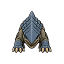
Bulette
A land shark: a heavy, armour-plated beast that swims through soil. It burrows under its prey and bursts out beneath it. A tamed one is a slow but frightening steed.
Leaping Bite · 12 s cooldown Leaps on a foe up to 7.9 cells away: 19 damage and a short stagger.
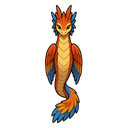
Couatl
A long winged serpent with plumage in every colour of the rainbow. Gentle unless threatened, it soothes and mends the wounds of those it travels with. Large ones can bear a rider through the air.
tameable, rideable (Giddy-Up), flying mount · wild in tropical rainforest, temperate forest, tropical swamp
Creature arts (1)
Rainbow Dive · nature · 18 s cooldown Dives from the air onto a spot up to 9.9 cells away: 16 damage to everyone within 1.5 cells, allies included, knocked back. May entangle.
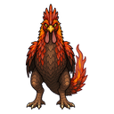
Ember cockatrice
A rooster-headed lizard bird with smouldering red feathers. It spits short gouts of flame and nests among hot rocks.
tameable, predator · wild in desert, arid shrubland, extreme desert
Creature arts (2)
Petrifying Glare · earth · 30 s cooldown Its gaze turns a foe up to 8.9 cells away half to stone: much slower for a few seconds.
Ember Breath · fire · 25 s cooldown A cone of fire 5.2 cells long: 7 damage to everyone in front, allies included. May set them alight.
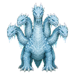
Frost hydra
A towering hydra of the frozen wastes with five frost-rimed heads. Its bites freeze flesh, and its bellow stuns whole hunting parties.
predator · wild in ice sheet, tundra
Creature arts (3)
Triple Frost Breath · ice · 25 s cooldown A cone of frost 7.1 cells long: 33 damage to everyone in front, allies included. Chills (slower for a while).
Tail Lash · ice · 12 s cooldown A frost sweep all around: 19 damage to everyone within 2.9 cells, allies included, knocked back 1 cell. Chills (slower for a while).
Hydra Roar · 40 s cooldown A terrifying roar: foes within 5.9 cells are shaken (slower, worse aim); smaller foes freeze for a moment.
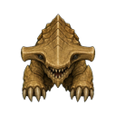
Hammerhead bulette
A bulette with a broad hammer-shaped head and thicker plates. It rams from below hard enough to knock a man senseless.
Hammer Ram · 20 s cooldown Charges in a straight line up to 8.9 cells: 19 damage to everyone in the way, thrown aside 2 cells.
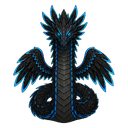
Jet couatl
A long feathered serpent with jet-black plumes edged in blue. It hovers above the canopy and calls lightning down on those who threaten it.
tameable, flying mount · wild in tropical rainforest, temperate forest
Creature arts (2)
Thunder Spit · lightning · 15 s cooldown Spits a lightning glob at one target up to 11.9 cells away: 10 damage. Stuns briefly.
Static Coil · lightning · 20 s cooldown A lightning pulse bursts out: 8 damage to everyone within 2.9 cells, allies included. Stuns briefly.
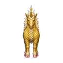
Kirin
A horse-like creature with shining golden scales, shell-pink hooves and a single antler-horn. It calls lightning against the wicked and is said to bless the land it walks.
flying mount · wild in temperate forest, boreal forest
Creature arts (2)
Thunder Gallop · lightning · 20 s cooldown Charges in a straight line up to 8.9 cells: 14 damage to everyone in the way, thrown aside 2 cells. Stuns briefly.
Kirin Blessing · lunar · 30 s cooldown Mends the wounds of allies within 5.9 cells (itself included): up to 11 injury healed each.
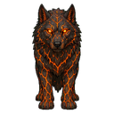
Magma wrath wolf
A wolf with cracked black fur glowing like cooling lava. It wants only to burn living things to charcoal before it eats them.
Mist Breath · wind · 25 s cooldown A cone of wind 5.4 cells long: 10 damage to everyone in front, allies included. Knocks back 2 cells.
Wrath Howl · wind · 50 s cooldown A rallying wind howl: allies within 7.9 cells move faster and bite harder for 15 seconds.
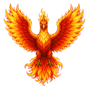
Phoenix
A great bird of living flame, its feathers shading from gold to deep crimson. Seen once in a lifetime, it scorches the earth where it lands.
predator · wild in desert, arid shrubland
Creature arts (3)
Phoenix Fire · fire · 25 s cooldown A cone of fire 5.7 cells long: 13 damage to everyone in front, allies included. May set them alight.
Rebirth Flame · fire · 30 s cooldown Mends the wounds of allies within 5.9 cells (itself included): up to 11 injury healed each.
Blazing Dive · fire · 18 s cooldown Dives from the air onto a spot up to 9.9 cells away: 16 damage to everyone within 1.5 cells, allies included, knocked back. May set them alight.
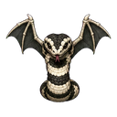
Pied viper
A small winged serpent with black-and-white banded scales, often mistaken for a young couatl. Its bite is venomous.
Venom Spit · venom · 15 s cooldown Spits a venom glob at one target up to 11.9 cells away: 7 damage. Poisons (toxic buildup).
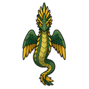
Primal couatl
An older, wilder couatl with deep green and gold plumes. Those who meet its gaze stand frozen and forget to fight.
tameable, rideable (Giddy-Up), flying mount · wild in tropical rainforest, tropical swamp
Creature arts (1)
Coils · 20 s cooldown Grabs an adjacent foe: 11 crushing damage, held (stunned) and entangled for a few seconds.
Pyro hydra
An immense dragon-like reptile with three heads, wreathed in smoke. It breathes jets of fire. Few things alive can stand against one.
predator · wild in desert, extreme desert, arid shrubland
Creature arts (3)
Triple Fire Breath · fire · 25 s cooldown A cone of fire 7.2 cells long: 33 damage to everyone in front, allies included. May set them alight.
Hydra Roar · 40 s cooldown A terrifying roar: foes within 5.9 cells are shaken (slower, worse aim); smaller foes freeze for a moment.
Tail Lash · fire · 12 s cooldown A fire sweep all around: 19 damage to everyone within 3 cells, allies included, knocked back 1 cell. May set them alight.
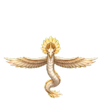
Radiant couatl
A couatl with pale gold plumes that shine like dawn. It flares with blinding light, and its bite leaves a curse that saps the strength of the bitten.
tameable, rideable (Giddy-Up), flying mount · wild in arid shrubland, temperate forest, tropical rainforest
Creature arts (1)
Dawn Flare · lunar · 20 s cooldown A moonlight pulse bursts out: 9 damage to everyone within 3.1 cells, allies included. Dazes briefly.
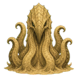
Sand kraken
A colossal tentacled beast that lurks under the dunes. Its tentacles burst from the sand to drag prey down. Few caravans survive its territory.
predator · wild in extreme desert, desert
Creature arts (3)
Tentacle Grasp · 20 s cooldown Grabs an adjacent foe: 20 crushing damage, held (stunned) and entangled for a few seconds.
Sand Ambush · earth · 30 s cooldown Vanishes underground and bursts up beside a foe up to 10.9 cells away: 31 damage to everyone within 1.5 cells, thrown up and stunned. Staggers briefly.
Tentacle Sweep · 12 s cooldown A sweep all around: 20 damage to everyone within 3.1 cells, allies included, knocked back 1 cell.
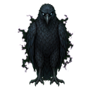
Shadestriker
A soot-black hawk the size of a man that dives out of a cloud of dark mist it breathes around itself.
Shade Dive · shadow · 18 s cooldown Dives from the air onto a spot up to 9.9 cells away: 13 damage to everyone within 1.5 cells, allies included, knocked back. Shakes their nerve (slower, worse aim).
Shadow Feathers · shadow · 18 s cooldown Fires a volley of shadow shards at foes up to 9.9 cells away: 4 damage each, 3 shots. Shakes their nerve (slower, worse aim).
Snarl beast
A heavily muscled, horned lion also called the lion fiend. Its snarl freezes prey in place before it leaps among them.
Snarl · 40 s cooldown A terrifying roar: foes within 5.9 cells are shaken (slower, worse aim); smaller foes freeze for a moment.
Rending Paws · 10 s cooldown A savage strike at an adjacent foe: 19 damage, then a second cut for 9.
Horn Charge · 20 s cooldown Charges in a straight line up to 8.9 cells: 15 damage to everyone in the way, thrown aside 2 cells.
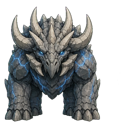
Thunder behemoth
An enormous beast plated in rocky armour, its head crowned with horns. It roams with an all-consuming hunger, and its roar knocks warriors senseless.
predator · wild in arid shrubland, tundra
Creature arts (3)
Thunder Charge · lightning · 20 s cooldown Charges in a straight line up to 8.9 cells: 26 damage to everyone in the way, thrown aside 2 cells. Stuns briefly.
Thunderstomp · lightning · 25 s cooldown Rears up and slams the ground: 22 damage to everyone within 4.4 cells, allies included; smaller ones are stunned. Stuns briefly.
Behemoth Roar · 40 s cooldown A terrifying roar: foes within 5.9 cells are shaken (slower, worse aim); smaller foes freeze for a moment.
Thunder wrath wolf
A wolf twisted by the wrath of the storm. Its bite crackles with lightning, and in a fight it calls bolts down on its prey.
Frost Breath · ice · 25 s cooldown A cone of frost 5.5 cells long: 11 damage to everyone in front, allies included. Chills (slower for a while).
Winter Howl · ice · 50 s cooldown A rallying frost howl: allies within 7.9 cells move faster and bite harder for 15 seconds.
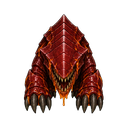
Xenarth bulette
An incredibly rare land shark coated in slimy red ichor that burns like acid. Anything it touches blisters.
predator · wild in tropical swamp, tropical rainforest, temperate swamp
Creature arts (1)
Ichor Spit · acid · 15 s cooldown Spits a acid glob at one target up to 11.9 cells away: 15 damage. Eats through armour.
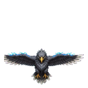
Ziz
A bird of legend so vast that its wings darken the sky when it passes. Storms gather where it nests. Its wingbeats knock warriors off their feet and lightning answers its cry. A tamed ziz can carry a rider over walls, rivers and mountains.
Skyfall Dive · wind · 18 s cooldown Dives from the air onto a spot up to 9.9 cells away: 36 damage to everyone within 1.5 cells, allies included, knocked back. Knocks back 2 cells.
Storm Feathers · wind · 18 s cooldown Fires a volley of wind shards at foes up to 9.9 cells away: 11 damage each, 4 shots. Knocks back 2 cells.
Thunder Cry · 40 s cooldown A terrifying roar: foes within 5.9 cells are shaken (slower, worse aim); smaller foes freeze for a moment.
Predators 24
Berserker wasp
A four-inch red wasp with two sets of shiny black wings. Its sting drives its victims into a mindless rage.
predator, herds · wild in tropical rainforest, temperate forest
Creature arts (1)
Berserk Sting · venom · 18 s cooldown Dives from the air onto a spot up to 9.9 cells away: 8 damage to everyone within 1.5 cells, allies included, knocked back. Poisons (toxic buildup).
Blade hood snake
A huge, clever serpent with blades along the edge of its hood. It is not venomous, but it cuts and crushes its prey.
Pounce · 12 s cooldown Leaps on a foe up to 7.9 cells away: 15 damage and a short stagger.
Lion Roar · 40 s cooldown A terrifying roar: foes within 5.9 cells are shaken (slower, worse aim); smaller foes freeze for a moment.
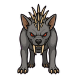
Chupacabra
A spiny, grey-skinned night hunter with long fangs, notorious for draining goats and sheep of their blood.
tameable, predator · wild in arid shrubland, tropical rainforest, desert
Creature arts (2)
Blood Drain · 14 s cooldown A bite that feeds: 9 damage to an adjacent foe and heals itself by about 5.
Night Pounce · 12 s cooldown Leaps on a foe up to 7.9 cells away: 10 damage and a short stagger.
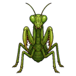
Deadly preying mantis
A green mantis taller than a man, folding scythe-like forelegs. It waits motionless among the leaves, then strikes faster than the eye.
tameable, predator · wild in tropical rainforest, temperate forest
Creature arts (2)
Scythe Flurry · blade · 10 s cooldown A savage blade strike at an adjacent foe: 15 damage, then a second cut for 7.
Ambush Leap · 12 s cooldown Leaps on a foe up to 7.9 cells away: 13 damage and a short stagger.
Dust digger
A giant starfish-like ambusher that buries itself in sand and waits. When prey steps close, it seizes it in its maw.
predator · wild in desert, extreme desert
Creature arts (2)
Dust Ambush · earth · 30 s cooldown Vanishes underground and bursts up beside a foe up to 10.9 cells away: 18 damage to everyone within 1.5 cells, thrown up and stunned. Staggers briefly.
Dust Cloud · earth · 25 s cooldown A cone of earth 6 cells long: 11 damage to everyone in front, allies included. Staggers briefly.
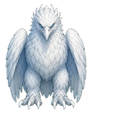
Frost roc
A gigantic eagle with snow-white plumage, talons and beak. It hunts mammoths and carries off anything smaller.
predator · wild in tundra, ice sheet
Creature arts (2)
Frost Dive · ice · 18 s cooldown Dives from the air onto a spot up to 9.9 cells away: 27 damage to everyone within 1.5 cells, allies included, knocked back. Chills (slower for a while).
Ice Feather Volley · ice · 18 s cooldown Fires a volley of frost shards at foes up to 9.9 cells away: 10 damage each, 4 shots. Chills (slower for a while).
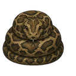
Giant constrictor
A thick-bodied serpent long enough to wrap a horse. It squeezes the breath out of its prey before swallowing it whole.
Web Net · 25 s cooldown Throws a sticky web up to 9.9 cells: everyone within 1.5 cells of the spot is entangled (much slower) for a few seconds.
Trapdoor Ambush · earth · 30 s cooldown Vanishes underground and bursts up beside a foe up to 10.9 cells away: 14 damage to everyone within 1.5 cells, thrown up and stunned. Staggers briefly.
Venom Fangs · venom · 10 s cooldown A savage venom strike at an adjacent foe: 15 damage, then a second cut for 7. Poisons (toxic buildup).
Hell moth
A giant moth with spiralling red and black bands and thin reddish wings. The scales it sheds burn, and it flies in deadly swarms by night.
Ember Dust · fire · 20 s cooldown A fire pulse bursts out: 7 damage to everyone within 2.8 cells, allies included. May set them alight.
Burning Dive · fire · 18 s cooldown Dives from the air onto a spot up to 9.9 cells away: 13 damage to everyone within 1.5 cells, allies included, knocked back. May set them alight.
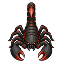
Hell scorpion
A black-and-crimson scorpion whose sting kills and stuns at once. It lairs in ruins and old tombs.
predator · wild in extreme desert, desert
Creature arts (2)
Hell Sting · venom · 10 s cooldown A savage venom strike at an adjacent foe: 18 damage, then a second cut for 9. Poisons (toxic buildup).
Brimstone Spit · fire · 15 s cooldown Spits a fire glob at one target up to 11.9 cells away: 12 damage. May set them alight.
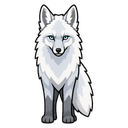
Hoarfrost fox
A silver fox whose fur is rimed with frost. Its bite leaves frostbite, and a tamed one is an eager little hunter.
tameable, predator · wild in tundra, boreal forest, ice sheet
Creature arts (2)
Frost Breath · ice · 25 s cooldown A cone of frost 5.1 cells long: 7 damage to everyone in front, allies included. Chills (slower for a while).
Snow Pounce · 12 s cooldown Leaps on a foe up to 7.9 cells away: 9 damage and a short stagger.
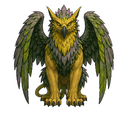
Jungle griffon
A green-and-gold feathered griffon of the deep rainforest. Proud and fierce, but a tamed one makes a loyal, fast steed.
Griffon Dive · wind · 18 s cooldown Dives from the air onto a spot up to 9.9 cells away: 17 damage to everyone within 1.5 cells, allies included, knocked back. Knocks back 2 cells.
Talon Rake · 10 s cooldown A savage strike at an adjacent foe: 18 damage, then a second cut for 9.
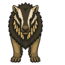
Leucrotta
A stag-bodied, badger-headed beast with a reeking stench and a jaw of solid bone ridges. It mimics human voices to lure travellers into the dark.
Poison Fling · venom · 15 s cooldown Spits a venom glob at one target up to 11.9 cells away: 7 damage. Poisons (toxic buildup).
Swinging Leap · 12 s cooldown Leaps on a foe up to 7.9 cells away: 9 damage and a short stagger.
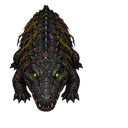
Profane crocodile
A black, scarred crocodile of the cursed swamps. Its bite festers, and it lies in wait in dark water.
tameable, rideable (Giddy-Up), predator · wild in tropical swamp, temperate swamp, cold bog
Creature arts (3)
Death Roll · shadow · 14 s cooldown A shadow bite that feeds: 15 damage to an adjacent foe and heals itself by about 9. Shakes their nerve (slower, worse aim).
Tail Lash · 12 s cooldown A sweep all around: 12 damage to everyone within 2.3 cells, allies included, knocked back 1 cell.
Profane Mire · shadow · 20 s cooldown A shadow pulse bursts out: 11 damage to everyone within 3.3 cells, allies included. Shakes their nerve (slower, worse aim).
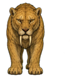
Sabre-tooth cat
A heavy-shouldered great cat with two long curved fangs. It ambushes big game and drags it down by the throat.
Horn Charge · 20 s cooldown Charges in a straight line up to 8.9 cells: 18 damage to everyone in the way, thrown aside 2 cells.
Rearing Stomp · earth · 25 s cooldown Rears up and slams the ground: 15 damage to everyone within 3.7 cells, allies included; smaller ones are stunned. Staggers briefly.
Crystal serpent
A fat, two-legged snake whose whole body looks like white crystal. Calm when tamed, and the crystal shards it sheds can be gathered.
tameable, wool · wild in ice sheet, tundra, desert
Creature arts (2)
Shard Spit · ice · 15 s cooldown Spits a frost glob at one target up to 11.9 cells away: 7 damage. Chills (slower for a while).
Crystal Scales · ice · 45 s cooldown Hunkers down behind its frost hide: takes half damage for 10 seconds but moves slower.
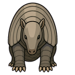
Dire armadillo
An armadillo as big as a boar, plated in banded bone. It digs for roots and grubs and is very hard to kill.
tameable · wild in desert, arid shrubland
Creature arts (2)
Armour Curl · iron · 45 s cooldown Hunkers down behind its iron hide: takes half damage for 10 seconds but moves slower.
Rolling Charge · 20 s cooldown Charges in a straight line up to 8.9 cells: 10 damage to everyone in the way, thrown aside 2 cells.
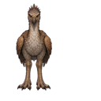
Dune strider
A tall, crested running bird with dusty brown plumage and long powerful legs. Desert nomads ride them: they outrun horses on sand and kick like mules.
tameable, rideable (Giddy-Up), herds · wild in desert, arid shrubland
Creature arts (2)
Leaping Kick · 12 s cooldown Leaps on a foe up to 7.9 cells away: 14 damage and a short stagger.
Dune Sprint · earth · 20 s cooldown Charges in a straight line up to 8.9 cells: 13 damage to everyone in the way, thrown aside 2 cells. Staggers briefly.
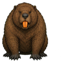
Giant beaver
A bear-sized beaver that dams whole rivers. Its pelt makes fine leather and its teeth fell trees in minutes.
tameable · wild in temperate swamp, boreal forest, cold bog
Creature arts (1)
Tail Slap · water · 12 s cooldown A water sweep all around: 8 damage to everyone within 1.9 cells, allies included, knocked back 1 cell. Knocks back 1 cell and douses fire.
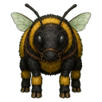
Giant bumblebee steed
A fat, fuzzy bumblebee the size of a pony. Gentle, it drifts from flower to flower; a trained one carries a light rider and swoops on enemies.
Honey Balm · nature · 30 s cooldown Mends the wounds of allies within 5.9 cells (itself included): up to 9 injury healed each.
Diving Sting · venom · 18 s cooldown Dives from the air onto a spot up to 9.9 cells away: 13 damage to everyone within 1.5 cells, allies included, knocked back. Poisons (toxic buildup).
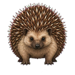
Giant hedgehog
A hedgehog the size of a pig, bristling with long quills. Predators leave it alone, but hunters value its quills and meat.
tameable · wild in temperate forest, boreal forest
Creature arts (2)
Quill Burst · quill · 18 s cooldown Fires a volley of quill shards at foes up to 9.9 cells away: 4 damage each, 3 shots.
Quill Ball · quill · 45 s cooldown Hunkers down behind its quill hide: takes half damage for 10 seconds but moves slower.
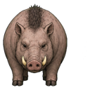
Giant hog
A barrel-bodied hog the size of a cart. It eats almost anything and grows fat fast.
Thick Wool · 45 s cooldown Hunkers down behind its tough hide: takes half damage for 10 seconds but moves slower.
Head Butt · 20 s cooldown Charges in a straight line up to 8.9 cells: 12 damage to everyone in the way, thrown aside 2 cells.
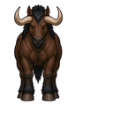
Halbeisen warhorse
A massively muscled warhorse with a bull-like head and a wide pair of sharp horns. Chakra-bred for war, it carries a rider and a pack into battle without flinching.
Horn Charge · 20 s cooldown Charges in a straight line up to 8.9 cells: 16 damage to everyone in the way, thrown aside 2 cells.
Stamping Herd · 25 s cooldown Rears up and slams the ground: 13 damage to everyone within 3.6 cells, allies included; smaller ones are stunned.
Plains kangaroo
A tall, red-furred hopping grazer of the dry plains. Boxers by nature: a cornered buck kicks hard enough to break ribs.
tameable, herds · wild in arid shrubland, desert
Creature arts (1)
Double Kick · 12 s cooldown Leaps on a foe up to 7.9 cells away: 11 damage and a short stagger.
Ram-horned mammoth
A shaggy mammoth with great curled ram horns. Calm in a herd, a strong pack beast, and rideable with Giddy-up.
tameable, rideable (Giddy-Up), pack animal, wool, herds · wild in tundra, boreal forest, cold bog
Creature arts (3)
Mammoth Charge · 20 s cooldown Charges in a straight line up to 8.9 cells: 23 damage to everyone in the way, thrown aside 2 cells.
Earthshaker · earth · 25 s cooldown Rears up and slams the ground: 19 damage to everyone within 4 cells, allies included; smaller ones are stunned. Staggers briefly.
Trumpet Blast · 40 s cooldown A terrifying roar: foes within 5.9 cells are shaken (slower, worse aim); smaller foes freeze for a moment.
Snow boar
A shaggy white boar of the cold forests. Hunters prize its thick hide and heavy hams, and fear its charge.
tameable, herds · wild in boreal forest, tundra
Creature arts (1)
Frost Charge · ice · 20 s cooldown Charges in a straight line up to 8.9 cells: 11 damage to everyone in the way, thrown aside 2 cells. Chills (slower for a while).
Stench kow
An evil-looking buffalo with misshapen horns and a breath that turns stomachs. Ill-tempered, but it gives rich milk and shrugs off a beating.
Moonlit Charge · lunar · 20 s cooldown Charges in a straight line up to 8.9 cells: 15 damage to everyone in the way, thrown aside 2 cells. Dazes briefly.
Crescent Glow · lunar · 20 s cooldown A moonlight pulse bursts out: 10 damage to everyone within 3.2 cells, allies included. Dazes briefly.
Flying swamp jellyfish
A pale jellyfish that drifts through swamp mist on a bladder of gas, trailing stinging tentacles.
herds · wild in temperate swamp, tropical swamp, cold bog
Creature arts (2)
Stinging Tendrils · venom · 20 s cooldown A venom pulse bursts out: 6 damage to everyone within 2.6 cells, allies included. Poisons (toxic buildup).
Water Jet · water · 15 s cooldown Spits a water glob at one target up to 11.9 cells away: 8 damage. Knocks back 1 cell and douses fire.
Giant stag
A red stag twice the height of an ordinary one, with a crown of many-pointed antlers. Prized game in the old forests.
Antler Charge · 20 s cooldown Charges in a straight line up to 8.9 cells: 14 damage to everyone in the way, thrown aside 2 cells.
Gorecupine
A boar-sized porcupine with barbed quills as long as a forearm. Anything that strikes it bleeds.
tameable · wild in temperate forest, boreal forest, arid shrubland
Creature arts (2)
Quill Volley · quill · 18 s cooldown Fires a volley of quill shards at foes up to 9.9 cells away: 5 damage each, 3 shots.
Spined Charge · quill · 20 s cooldown Charges in a straight line up to 8.9 cells: 12 damage to everyone in the way, thrown aside 2 cells.
Hippogriff
An eagle-fronted, horse-bodied beast. Shy in the wild, but a hippogriff raised from a foal is a swift and fearless steed.
tameable, rideable (Giddy-Up), flying mount · wild in temperate forest, boreal forest
Creature arts (2)
Swooping Dive · wind · 18 s cooldown Dives from the air onto a spot up to 9.9 cells away: 17 damage to everyone within 1.5 cells, allies included, knocked back. Knocks back 2 cells.
Talon Rake · 10 s cooldown A savage strike at an adjacent foe: 18 damage, then a second cut for 9.
Keel turtle
A huge turtle with a barnacle-covered shell and a great spike rising from it. Slow and nearly impossible to hurt.
tameable, rideable (Giddy-Up) · wild in temperate swamp, tropical swamp, cold bog
Creature arts (2)
Withdraw · 45 s cooldown Hunkers down behind its tough hide: takes half damage for 10 seconds but moves slower.
Keel Ram · 20 s cooldown Charges in a straight line up to 8.9 cells: 23 damage to everyone in the way, thrown aside 2 cells.
Pleistocene deer
A towering prehistoric deer with an enormous spread of antlers. Its meat feeds a village for a week, if the hunters survive its charge.
tameable, rideable (Giddy-Up) · wild in boreal forest, tundra
Creature arts (2)
Antler Charge · 20 s cooldown Charges in a straight line up to 8.9 cells: 19 damage to everyone in the way, thrown aside 2 cells.
Stamp · 25 s cooldown Rears up and slams the ground: 16 damage to everyone within 3.8 cells, allies included; smaller ones are stunned.
Undead 15
Never tame. They come with the restless-dead night event and some ruins.
Apparition
The restless spirit of someone who died of fright, returned for revenge. Its cold touch fills the living with terror.
undead
Creature arts (2)
Wail · spirit · 35 s cooldown A ghostly wail: 5 damage and a short stun to everyone within 4.9 cells, allies included (the undead are immune).
Chill Touch · spirit · 14 s cooldown A ghostly bite that feeds: 9 damage to an adjacent foe and heals itself by about 5. Shakes their nerve (slower, worse aim).
Brain-eating zombie
A hungry zombie that goes for the head. Its bites leave victims confused, and it shrugs off wounds that would drop a living man.
undead
Creature arts (2)
Hungry Bite · 14 s cooldown A bite that feeds: 10 damage to an adjacent foe and heals itself by about 6.
Moan · spirit · 35 s cooldown A ghostly wail: 4 damage and a short stun to everyone within 4.9 cells, allies included (the undead are immune).
Flesh-eating zombie
A ravenous corpse whose bite spreads rot through the blood.
undead
Creature arts (2)
Hungry Bite · 14 s cooldown A bite that feeds: 10 damage to an adjacent foe and heals itself by about 6.
Rotting Burst · venom · 20 s cooldown A venom pulse bursts out: 7 damage to everyone within 2.8 cells, allies included. Poisons (toxic buildup).
Ghast
A strong, gaunt corpse-eater. The stench and touch of its claws can paralyse.
undead
Creature arts (2)
Paralysing Claws · paralyze · 10 s cooldown A savage paralysing strike at an adjacent foe: 14 damage, then a second cut for 7. Paralyses briefly (not undead).
Grave Stench · venom · 20 s cooldown A venom pulse bursts out: 7 damage to everyone within 2.8 cells, allies included. Poisons (toxic buildup).
Ghoul
A low undead that feeds on the dead. Its claws can leave a victim stiff for a moment.
undead
Creature arts (1)
Paralysing Claws · paralyze · 10 s cooldown A savage paralysing strike at an adjacent foe: 13 damage, then a second cut for 6. Paralyses briefly (not undead).
Giant zombie
The animated corpse of a giant, or many corpses stitched into one. Every swing of its arms can flatten a man.
undead
Creature arts (2)
Giant Stomp · 25 s cooldown Rears up and slams the ground: 16 damage to everyone within 3.8 cells, allies included; smaller ones are stunned.
Giant Swing · 12 s cooldown A sweep all around: 14 damage to everyone within 2.5 cells, allies included, knocked back 1 cell.
Green grave hag
A territorial undead crone with mossy skin and iron-hard nails. Terrifyingly fast when provoked.
undead
Creature arts (2)
Evil Eye · spirit · 30 s cooldown A ghostly gaze at a foe up to 8.9 cells away: stunned for 1.7 seconds. Shakes their nerve (slower, worse aim).
Grasping Vines · nature · 25 s cooldown Throws a net of vines up to 9.9 cells: everyone within 1.5 cells of the spot is entangled (much slower) for a few seconds.
Juju zombie
A corpse risen from a death by energy drain. Faster and cleverer than common zombies, and its touch drains strength.
undead
Creature arts (2)
Juju Bite · shadow · 14 s cooldown A shadow bite that feeds: 10 damage to an adjacent foe and heals itself by about 6. Shakes their nerve (slower, worse aim).
Hex Pulse · shadow · 20 s cooldown A shadow pulse bursts out: 7 damage to everyone within 2.8 cells, allies included. Shakes their nerve (slower, worse aim).
Lacedon
A drowned ghoul that haunts lakes, rivers and swamps, dragging the unwary under.
undead
Creature arts (2)
Paralysing Claws · paralyze · 10 s cooldown A savage paralysing strike at an adjacent foe: 13 damage, then a second cut for 6. Paralyses briefly (not undead).
Lunge from the Deep · 12 s cooldown Leaps on a foe up to 7.9 cells away: 11 damage and a short stagger.
Nightwraith banshee
A grieving spirit that rises when the sun sets. Its wail stops the living in their tracks.
undead
Creature arts (2)
Banshee's Wail · spirit · 35 s cooldown A ghostly wail: 6 damage and a short stun to everyone within 4.9 cells, allies included (the undead are immune).
Chill Touch · spirit · 14 s cooldown A ghostly bite that feeds: 10 damage to an adjacent foe and heals itself by about 6. Shakes their nerve (slower, worse aim).
Sea hag
A weaker cousin of the grave hag that haunts swamps and coasts. Its touch saps strength.
undead
Creature arts (2)
Death Glare · spirit · 30 s cooldown A ghostly gaze at a foe up to 8.9 cells away: stunned for 1.7 seconds. Shakes their nerve (slower, worse aim).
Drowning Kiss · water · 14 s cooldown A water bite that feeds: 10 damage to an adjacent foe and heals itself by about 6. Knocks back 1 cell and douses fire.
Sivian banshee
A field spirit that dances in circles at high noon and lures farmers into its dance. Its wail dazes everyone near.
undead
Creature arts (2)
Sivian Wail · spirit · 35 s cooldown A ghostly wail: 6 damage and a short stun to everyone within 4.9 cells, allies included (the undead are immune).
Hollow Gaze · spirit · 30 s cooldown A ghostly gaze at a foe up to 8.9 cells away: stunned for 1.7 seconds. Shakes their nerve (slower, worse aim).
Skeleton warrior
Bones animated by foul chakra. Blades slip between its ribs; only crushing blows truly hurt it.
undead
Creature arts (1)
Bone Throw · bone · 18 s cooldown Fires a volley of bone shards at foes up to 9.9 cells away: 4 damage each, 3 shots.
Talking zombie
Cursed and murdered, it rises seeking revenge and moans the names of its killers. Its voice breaks the nerve of the living.
undead
Creature arts (2)
Babbling Curse · spirit · 35 s cooldown A ghostly wail: 4 damage and a short stun to everyone within 4.9 cells, allies included (the undead are immune).
Hungry Bite · 14 s cooldown A bite that feeds: 10 damage to an adjacent foe and heals itself by about 6.
Zombie
A shambling corpse raised by necromancy. Slow, tireless and hard to put down.
undead
Creature arts (1)
Hungry Bite · 14 s cooldown A bite that feeds: 10 damage to an adjacent foe and heals itself by about 6.
Summons, golems and companions 22
Called by techniques and contracts, never found wild.
Ashmaw
A legendary boar the size of a house, its bristles smouldering like coals and its tusks scorched black. Where the Ashmaw walks, fields burn and villages empty. It has no den and no herd: it simply roams, and nothing stands in its way for long.
predator
Kishinryuu
The storm dragon of the Kazeraikou clan, summoned for one fight. Lightning falls on enemies around it, and it fights with its own lightning and water techniques: Storm Breath, Water Dragon Bullet, Great Tidal Wave, Thunder Rain and Storm Torrent. It uses them by itself, or you can aim them while it is drafted. It goes back into the storm when its time is up.
tameable, rideable (Giddy-Up)
Thunderhorn
A bull of legend with storm clouds caught in its mane and lightning crackling between its horns. Its bellow knocks warriors flat, and the sky darkens where it grazes.
predator
Tidewyrm
A sea serpent of legend that follows rivers far inland, its scales the colour of deep water. Fishing villages tell their children it can swallow a boat whole; the ninja who have fought it say that is an understatement.
predator
Bone golem
A short, powerful golem of fortified bone, all levers and spikes. Piercing attacks barely scratch it. It serves its Kaguya maker until destroyed.
tameable, rideable (Giddy-Up)
Creature arts (2)
Bone Shards · bone · 18 s cooldown Fires a volley of bone shards at foes up to 9.9 cells away: 5 damage each, 3 shots.
Bone Plating · bone · 45 s cooldown Hunkers down behind its bone hide: takes half damage for 10 seconds but moves slower.
Elder gale hawk
A elder gale hawk from the contract clan of the Gale Hawks, answering a summoner's call. It returns to its home when the technique ends.
tameable, rideable (Giddy-Up), flying mount
Creature arts (3)
Gale Dive · wind · 18 s cooldown Dives from the air onto a spot up to 9.9 cells away: 30 damage to everyone within 1.5 cells, allies included, knocked back. Knocks back 2 cells.
Gale Feathers · wind · 18 s cooldown Fires a volley of wind shards at foes up to 9.9 cells away: 11 damage each, 4 shots. Knocks back 2 cells.
Cyclone Wings · wind · 20 s cooldown A wind pulse bursts out: 17 damage to everyone within 4.2 cells, allies included. Knocks back 2 cells.
Elder iron boar
A elder iron boar from the contract clan of the Iron Boars, answering a summoner's call. It returns to its home when the technique ends.
tameable, rideable (Giddy-Up)
Creature arts (3)
Iron Charge · iron · 20 s cooldown Charges in a straight line up to 8.9 cells: 26 damage to everyone in the way, thrown aside 2 cells.
Iron Hide · iron · 45 s cooldown Hunkers down behind its iron hide: takes half damage for 10 seconds but moves slower.
Iron Stamp · iron · 25 s cooldown Rears up and slams the ground: 21 damage to everyone within 4.2 cells, allies included; smaller ones are stunned.
Elder moon wolf
A elder moon wolf from the contract clan of the Moon Wolfs, answering a summoner's call. It returns to its home when the technique ends.
tameable, rideable (Giddy-Up)
Creature arts (3)
Moon Howl · lunar · 50 s cooldown A rallying moonlight howl: allies within 7.9 cells move faster and bite harder for 15 seconds.
Moonlit Pounce · lunar · 12 s cooldown Leaps on a foe up to 7.9 cells away: 28 damage and a short stagger. Dazes briefly.
Moon Gaze · lunar · 30 s cooldown A moonlight gaze at a foe up to 8.9 cells away: stunned for 2.2 seconds.
Elder stone tortoise
A elder stone tortoise from the contract clan of the Stone Tortoises, answering a summoner's call. It returns to its home when the technique ends.
tameable, rideable (Giddy-Up)
Creature arts (3)
Stone Shell · earth · 45 s cooldown Hunkers down behind its earth hide: takes half damage for 10 seconds but moves slower.
Ground Pound · earth · 25 s cooldown Rears up and slams the ground: 21 damage to everyone within 4.2 cells, allies included; smaller ones are stunned. Staggers briefly.
Grove Blessing · nature · 30 s cooldown Mends the wounds of allies within 5.9 cells (itself included): up to 20 injury healed each.
Flame golem
A golem of living flame. Its blows burn, and fire cannot hurt it. It flickers out when its time is up.
tameable, rideable (Giddy-Up)
Creature arts (2)
Flame Pulse · fire · 20 s cooldown A fire pulse bursts out: 9 damage to everyone within 3 cells, allies included. May set them alight.
Furnace Breath · fire · 25 s cooldown A cone of fire 5.7 cells long: 13 damage to everyone in front, allies included. May set them alight.
Great gale hawk
A great gale hawk from the contract clan of the Gale Hawks, answering a summoner's call. It returns to its home when the technique ends.
tameable, rideable (Giddy-Up), flying mount
Creature arts (2)
Gale Dive · wind · 18 s cooldown Dives from the air onto a spot up to 9.9 cells away: 18 damage to everyone within 1.5 cells, allies included, knocked back. Knocks back 2 cells.
Gale Feathers · wind · 18 s cooldown Fires a volley of wind shards at foes up to 9.9 cells away: 7 damage each, 3 shots. Knocks back 2 cells.
Great iron boar
A great iron boar from the contract clan of the Iron Boars, answering a summoner's call. It returns to its home when the technique ends.
tameable, rideable (Giddy-Up)
Creature arts (2)
Iron Charge · iron · 20 s cooldown Charges in a straight line up to 8.9 cells: 16 damage to everyone in the way, thrown aside 2 cells.
Iron Hide · iron · 45 s cooldown Hunkers down behind its iron hide: takes half damage for 10 seconds but moves slower.
Great moon wolf
A great moon wolf from the contract clan of the Moon Wolfs, answering a summoner's call. It returns to its home when the technique ends.
tameable, rideable (Giddy-Up)
Creature arts (2)
Moon Howl · lunar · 50 s cooldown A rallying moonlight howl: allies within 7.9 cells move faster and bite harder for 15 seconds.
Moonlit Pounce · lunar · 12 s cooldown Leaps on a foe up to 7.9 cells away: 17 damage and a short stagger. Dazes briefly.
Great stone tortoise
A great stone tortoise from the contract clan of the Stone Tortoises, answering a summoner's call. It returns to its home when the technique ends.
tameable, rideable (Giddy-Up)
Creature arts (2)
Stone Shell · earth · 45 s cooldown Hunkers down behind its earth hide: takes half damage for 10 seconds but moves slower.
Ground Pound · earth · 25 s cooldown Rears up and slams the ground: 13 damage to everyone within 3.6 cells, allies included; smaller ones are stunned. Staggers briefly.
Skeletal steed
A long-legged steed of fortified bone, grown by a Kaguya. Very fast, hard to pierce, and it never tires. It serves its maker until destroyed. With Giddy-up loaded it can be ridden.
tameable, rideable (Giddy-Up)
Creature arts (1)
Deathless Charge · bone · 20 s cooldown Charges in a straight line up to 8.9 cells: 15 damage to everyone in the way, thrown aside 2 cells.
Stone golem
A humanoid golem of rock raised by Earth arts. Slow and very hard to break. It crumbles back into the ground when its time is up.
tameable, rideable (Giddy-Up)
Creature arts (2)
Ground Pound · earth · 25 s cooldown Rears up and slams the ground: 13 damage to everyone within 3.6 cells, allies included; smaller ones are stunned. Staggers briefly.
Stone Skin · earth · 45 s cooldown Hunkers down behind its earth hide: takes half damage for 10 seconds but moves slower.
Water beast
A huge beast shaped from water. Its claws tear, and blades pass through it without much harm.
tameable, rideable (Giddy-Up)
Creature arts (3)
Torrent · water · 25 s cooldown A cone of water 6.7 cells long: 21 damage to everyone in front, allies included. Knocks back 1 cell and douses fire.
Tail Lash · water · 12 s cooldown A water sweep all around: 16 damage to everyone within 2.6 cells, allies included, knocked back 1 cell. Knocks back 1 cell and douses fire.
Drowning Grip · water · 20 s cooldown Grabs an adjacent foe: 16 crushing damage, held (stunned) and entangled for a few seconds. Knocks back 1 cell and douses fire.
Wood golem
A towering golem of living wood. Very tough and very strong, but fire burns it badly.
tameable, rideable (Giddy-Up)
Creature arts (3)
Thorn Volley · nature · 18 s cooldown Fires a volley of thorn shards at foes up to 9.9 cells away: 11 damage each, 4 shots. May entangle.
Root Grasp · nature · 20 s cooldown Grabs an adjacent foe: 19 crushing damage, held (stunned) and entangled for a few seconds. May entangle.
Sap Mend · nature · 30 s cooldown Mends the wounds of allies within 5.9 cells (itself included): up to 20 injury healed each.
Young gale hawk
A young gale hawk from the contract clan of the Gale Hawks, answering a summoner's call. It returns to its home when the technique ends.
tameable
Creature arts (1)
Gale Dive · wind · 18 s cooldown Dives from the air onto a spot up to 9.9 cells away: 12 damage to everyone within 1.5 cells, allies included, knocked back. Knocks back 2 cells.
Young iron boar
A young iron boar from the contract clan of the Iron Boars, answering a summoner's call. It returns to its home when the technique ends.
tameable
Creature arts (1)
Iron Charge · iron · 20 s cooldown Charges in a straight line up to 8.9 cells: 10 damage to everyone in the way, thrown aside 2 cells.
Young moon wolf
A young moon wolf from the contract clan of the Moon Wolfs, answering a summoner's call. It returns to its home when the technique ends.
tameable
Creature arts (2)
Moon Howl · lunar · 50 s cooldown A rallying moonlight howl: allies within 7.9 cells move faster and bite harder for 15 seconds.
Moonlit Pounce · lunar · 12 s cooldown Leaps on a foe up to 7.9 cells away: 11 damage and a short stagger. Dazes briefly.
Young stone tortoise
A young stone tortoise from the contract clan of the Stone Tortoises, answering a summoner's call. It returns to its home when the technique ends.
tameable
Creature arts (1)
Stone Shell · earth · 45 s cooldown Hunkers down behind its earth hide: takes half damage for 10 seconds but moves slower.